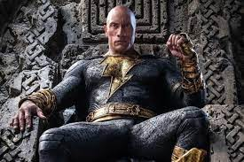

Black Adam es la película del antihéroe de DC Comics que da nombre al filme -encarnado por Dwayne Johnson- gran antagonista de Shazam!.
Este largometraje es la hisotoria de su origen y revelando su pasado como esclavo en el país Kahndaq. Nacido en el Antiguo Egipto, Black Adam tiene superfuerza, velocidad, resistencia, la capacidad de volar y disparar rayos. Alter ego de Teth-Adam e hijo del faraón Ramsés II, fue consumido por sus poderes mágicos y se transformó en un hechicero.
Gran enemigo de Shazam! en los cómics, a pesar de creer en su potencial e incluso ofrecerlo como guerrero del bien, Black Adam acaba utilizando sus habilidades especiales para el mal.
Sin embargo, un grupo de héroes conocido como la JSA encabezados por Doctor Fate (Pierce Brosnan) tratarán que el peligroso superhumano busque la redención y pase a utilizar sus poderes para hacer el bien, ievocando a la humanidad que alguna vez habitó en su interior.

| id | nombre | contrasena | |
|---|---|---|---|
| 1 | Fatima | a@a.cl | 45262 |
| 2 | Sebastia | s@g.cl | 96666 |
| 3 | Barbara | 96826 |